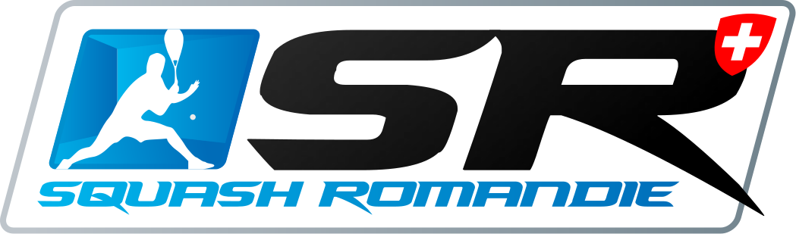
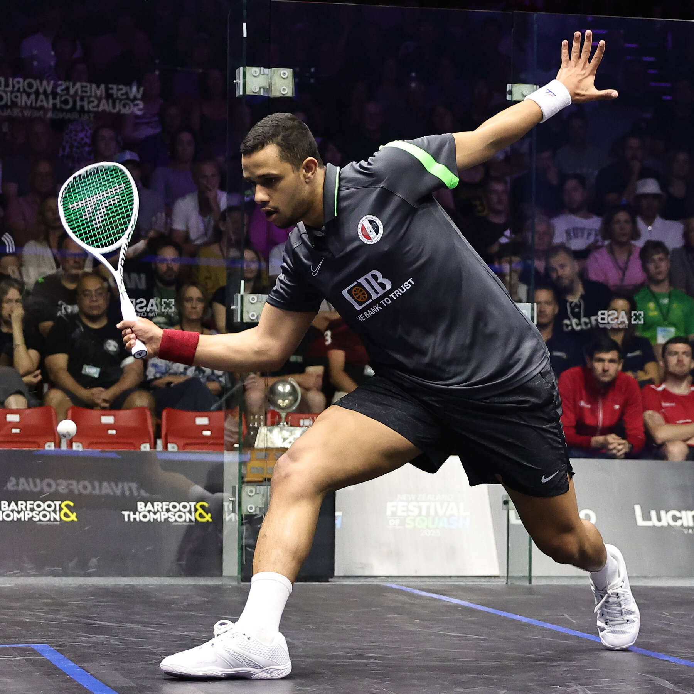
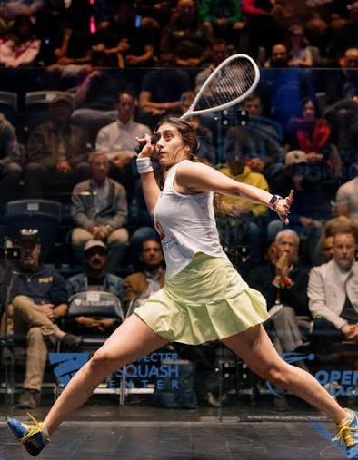

Terrains
4 terrains aux normes officielles, entretenus quotidiennement pour un jeu optimal.
Squash Marin — La passion du Squash
Que vous soyez débutant ou joueur confirmé, nos terrains modernes et notre communauté passionnée vous attendent toute l'année.
Un club à taille humaine, des installations et une ambiance de jeu au top entouré de passionnés !
4 terrains aux normes officielles, entretenus quotidiennement pour un jeu optimal.
Débutants, amateurs ou compétiteurs :
Vous trouverez votre bonheur à tous les coups !
Entraînements tous les mardis de 18h15 à 20h00.
Venez essayer sans engagement !
10 CHF / session, pendant les entraînements du mardi. 1 essai découverte avec raquette prêtée.
Interclubs, Mini-ligues, matchs amicaux et tournois sont proposés tout au long de l'année.
Un restaurant pour se ressourcer après les sessions intenses et partager un moment entre membres.
Cardio, tonicité, réflexes, évacuation du stress... le squash est régulièrement élu sport le plus complet pour la santé. Une heure de jeu, mille bienfaits.

Notre club est affilié à la fédération de squash.
"Le squash est une addiction, ce club est mon deuxième chez moi. C'est un endroit où l'on se sent bien et où on apprend au quotidien sur soi-même."
"Ce qui me plaît dans ce club, c'est l'atmosphère chaleureuse, le partage et voir les autres progresser."
"Depuis 1984, je pratique le squash avec plaisir et régularité. J'aime beaucoup entraîner les jeunes."

Votre premier essai est offert, sans engagement.
Je prends contact !
Une question ? Envie de visiter le club ?
Écrivez-nous ou passez nous voir !
Entrainement à l'année tous les mardis à partir de 18h15 !